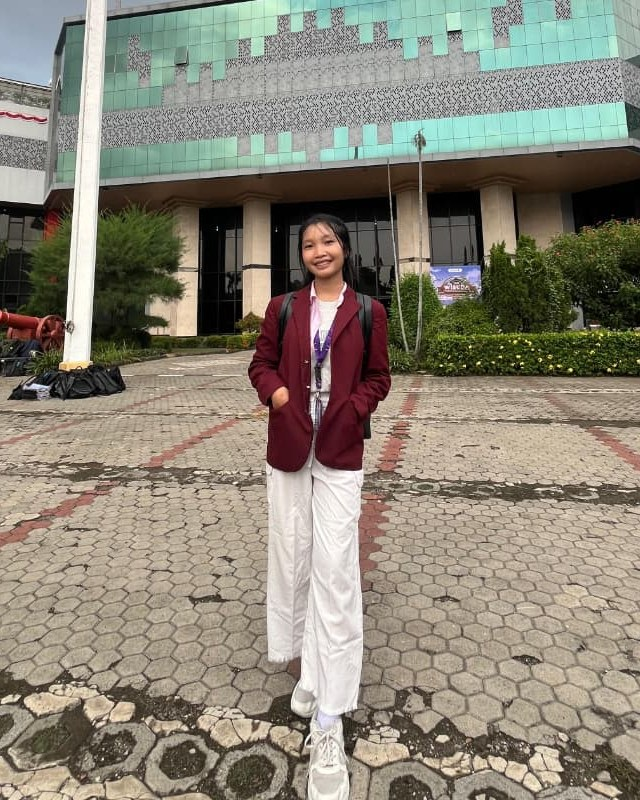
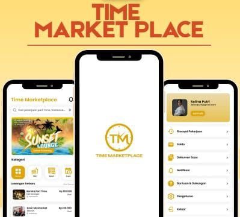
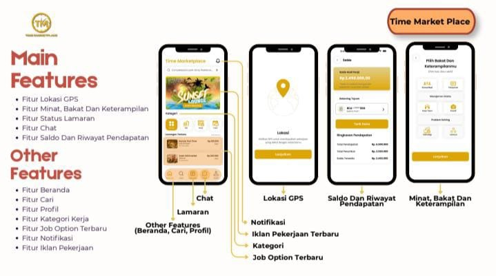

Halo, perkenalkan
Mahasiswa Sistem Informasi Telkom University Surabaya. Teliti, bertanggung jawab, dan memiliki kemampuan public speaking yang baik. Senang bekerja dalam tim serta selalu terbuka untuk belajar hal baru.

Mahasiswa aktif angkatan 2025/2026 Program Studi Sistem Informasi, Fakultas Rekayasa Industri, Telkom University Surabaya. Teliti, bertanggung jawab, dan optimis, dengan kemampuan komunikasi serta public speaking yang cukup baik.
Terbiasa menyampaikan gagasan secara runtut dalam forum diskusi dan selalu bersemangat mempelajari hal baru, terutama lewat kegiatan di lingkungan kemahasiswaan.
Perjalanan belajar dari SMA jurusan IPS hingga kuliah di Sistem Informasi.
Mempelajari pembentukan program dengan algoritma pemrograman, manajemen data dan informasi, proses bisnis dalam organisasi, serta analisis sistem informasi.
Mempelajari ilmu ekonomi, geografi, sosiologi, dan sejarah, serta aktif dalam kegiatan akademik dan organisasi sekolah.
Sertifikasi di bidang Supply Chain Management dengan SAP.
2023 – sekarang
Aplikasi marketplace khusus pencari kerja part time. Pengguna bisa menemukan lowongan yang sesuai dengan lokasi, minat, bakat, dan keterampilan mereka, lalu melamar langsung dari aplikasi.


Terbuka untuk kolaborasi, diskusi, maupun sekadar berkenalan. Silakan hubungi lewat salah satu kontak di bawah ini.